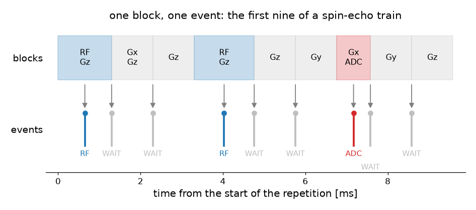
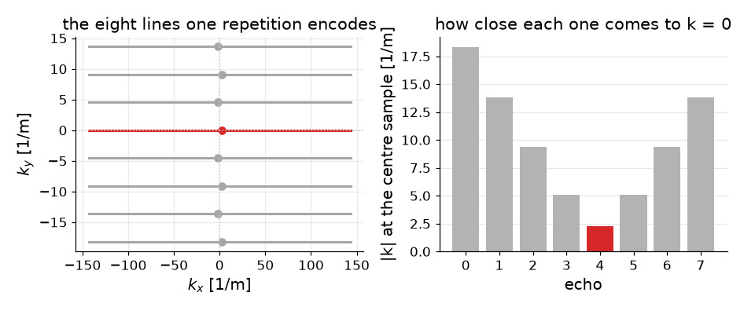

Sequence description#
A sequence reaches TorchSim as an event stream: one repetition’s worth of events, each with a timestamp and the few numbers its kind carries. This page is what that stream holds, how it is read out of a Pulseq file, and how a scanner carries it. The physics the events drive is Extended phase graphs; how the kernels run them is How TorchSim runs it.
Event classification#
An event is one of three things, and carries a timestamp in microseconds whichever it is.
WAIT – time passing. Nothing but when.
RF – a pulse, stamped at its isocenter. It names the pulse shape it drives, the amplitude and phase it drives it at, a frequency offset, a transmit shim, and the slice-select gradient playing under it.
ADC – a sample, stamped where its readout passes closest to k = 0. It carries the receiver phase, its role among the repetition’s samples, and whether it reaches k = 0 at all.
A pulse also carries the use its designer gave it, which is the one thing a
Pulseq file says about what a pulse is for: EXCITATION, REFOCUSING,
INVERSION, SATURATION, PREPARATION, OTHER, or UNKNOWN where the file
is silent. A simulator dispatches on it, so a refocusing pulse reaches the
refocusing handler whatever angle it turns.
A sample carries a role, relating it to the other samples of the same
repetition: SINGLE where a repetition takes one and where several are alike,
ECHO_CENTER for the one nearest the centre of a train whose samples are not,
NON_CENTER for the rest, and NON_ACQUIRED for a window that records
nothing. Beside it sits the echo flag, and the two answer different questions –
see Echo detection.
Every event has one field more, an action, saying what the sequence does around it that is not itself an event: crushing before or after a pulse, winding or spoiling after a sample. A stream that arrived from a scanner has this empty on every event, and Gradients the stream does not carry is why.
Blocks to events#
A Pulseq file is a table of blocks, each holding at most one RF pulse, one gradient per axis, and one ADC window. One block becomes one event.
{kind=link}

The first nine blocks of a spin-echo train and the events they become. A block holding a pulse becomes an RF event, one holding only a sample becomes an ADC event, and the rest become WAITs – the gradients they play are not events.#
Timestamps accumulate from the start of the repetition being read, not from the
start of the scan, so a description is the same wherever in the file it was
taken from. Two of them are not the block’s own start: an RF event is stamped
at the isocenter of its pulse, delay + center, and an ADC event at the sample
the trajectory passes closest to zero in. A block carrying both a pulse and a
sample is read as the pulse.
Which repetition. The file states how many blocks one repetition holds, in
its TRSize definition, and reading is refused without it – a period is
declared by the design side, never searched for here. Which instance of it
stands for the sequence is a separate question, and it has an obvious answer
only when the repetitions are alike. The default is the first repetition that
acquires, and that default is refused when the repetitions play different
pulses – an optimized echo train, a fingerprinting schedule – because the
simulation would otherwise silently stand for whichever came first. Such a file
says which with a TRRef definition, or the caller passes tr_index.
from torchsim.simulators import FSESimulator
# The tissue is given; the echo spacing, the train length, the refocusing
# angle and the pulse shapes are read.
train = FSESimulator.from_pulseq("fse.seq", states=20)
signal = train.simulate(T1=830.0, T2=80.0)
Reading a file needs pypulseq, which parses the format and computes the
gradient trajectory: pip install torchsim[pulseq].
Pulse shapes#
An RF event names a definition rather than carrying a waveform, and several events share one. Pulseq writes a library row per pulse occurrence, so RF spoiling writes one row per repetition of the same shape; rows agreeing on their magnitude, phase and time shapes are one pulse played at different amplitudes, phases and frequencies, and collapse onto a single definition.
A definition holds the envelope, normalized so that the amplitude an event
carries is the flip angle in radians. What that normalization divides by is the
envelope integrated on the raster the file declares as its
RadiofrequencyRasterTime, so the raster travels with the description. Read a
pulse sampled every 2 microseconds on a 1 microsecond raster and every flip
angle in the sequence is halved.
Beyond one envelope a definition can carry a phase per sample, sample times of its own, a slice-select gradient per sample, several frequency bands, and one envelope per transmit channel. Which of those are present is what decides whether a pulse reaches the kernels as an ideal rotation, an integrated rotation about a fixed axis, or a full dynamic one; How TorchSim runs it has that.
Echo detection#
A Pulseq file does not say which sample is the echo. It says what gradients play, and the trajectory follows: \(k = \gamma \int G\,\mathrm{d}t\), the same quantity as the k-space coordinate of imaging. A readout’s own centre is the sample where the axes that readout sweeps come closest to zero.
{kind=link}

One repetition of the spin-echo train above. Every readout sweeps through its own zero in the readout direction, which is what makes each of them an echo; only one of the eight is also at the centre of the phase-encode direction.#
Two questions follow, and they are not the same one.
Whether a position bears an echo is absolute. The comparison is against the
scan’s own closest approach to k = 0, reduced over every instance of that
position in the file, with a tolerance relative to the largest coordinate the
scan reaches – so a finite phase-encode offset stays out and accumulated
floating-point error stays in. This is what separates the line through the
centre from the phase-encoded ones, and it is what record="echo" keeps.
What a position’s role is is structural. The norm is taken only along the
axes the readout itself sweeps, ignoring offsets carried in from encodes, so a
CPMG echo is central whatever line it encodes. Where a repetition takes several
samples and one is nearer the centre than the rest, that one is ECHO_CENTER
and the others NON_CENTER; where they tie – every echo of a CPMG train,
every blade of a PROPELLER – all of them are SINGLE. This is what
record="acquired" reads.
The train in the figure is the tied case: all eight roles are SINGLE, because
each echo is central in the direction it sweeps, and one echo flag is set,
because only one of them is the line through k = 0.
MRD waveforms#
A scanner does not send a file. The description travels beside the raw data as
four MRD custom waveforms – a scan-global header, the event stream, the RF
shapes, and the transmit shims – which the MRD client decodes into the same
object from_pulseq() builds. A simulation
driven from a design script and one driven from a running scan therefore read
one derivation, not two.
The fields of an event are positional and in that wire order, which is why an RF event’s numbers are reached through named properties rather than by index.
Gradients the stream does not carry#
The stream names pulses and samples. It does not name gradients, and that is not an omission that can be repaired by adding a field: a Pulseq file has no gradient use, so a crusher cannot be told from a phase encode without tracking the k-space moment through the whole repetition, and the moment itself is what an EPG simulation quantizes away.
What the description carries instead is one dephasing for the whole sequence –
crusher_dephasing_rad, the turn one unbalanced gradient winds across a voxel
of voxel_size_m. Their ratio is what diffusion is damped by and what flow
turns each order through. A dephasing of zero leaves both terms out however
large the coefficients behind them.
Everything else lives in the simulator. A refocused train crushes either side of its refocusing pulses, an unbalanced one winds an order after every sample, a spoiled one discards the transverse states, a balanced one leaves them where they are. Naming the simulator is what says which of those the arriving events are to be read as, and it is the only thing a caller chooses:
from torchsim.simulators import FSESimulator, MRFSimulator
# The same file, read as a refocused train and as an unbalanced one.
refocused = FSESimulator.from_pulseq("scan.seq")
unbalanced = MRFSimulator.from_pulseq("scan.seq")
Two consequences are worth knowing. A gradient moment that is not a whole number of configuration orders has no spelling here – a bipolar pair, a velocity-encoding lobe, a crusher of twice its neighbour’s area. And a preparation’s own spoiler does not survive the round trip: a handler reinstates what a pulse or a sample implies, and a bare gradient is neither, so a preparation that has to reach the kernels belongs in a pulse the wire can name.